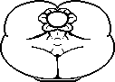

```html
<!DOCTYPE html>
<html>
<head>
    <meta charset="UTF-8">
    <title>UNDERGOON</title>

    <link rel="icon" type="image/png" href="assets/spr_favicon.png">

    <style>
        @font-face {
            font-family: "PixelOperator";
            src: url("fonts/PixelOperator-Bold.ttf") format("truetype");
        }

        html, body {
            margin: 0;
            width: 100%;
            height: 100%;
        }

        body {
            display: flex;
            justify-content: center;
            align-items: flex-start;
            background: black;
        }

        .banner {
            position: absolute;
            top: 0;
            left: 50%;
            transform: translateX(-50%);
            width: 50%;
            max-width: 100%;
            image-rendering: pixelated;
        }

        .container {
            display: flex;
            flex-direction: column;
            align-items: center;
            margin-top: 17vh;
        }

        .flowey {
            image-rendering: pixelated;
            width: 200%;
            height: 200%;
        }

        .twitter,
        .itch {
            margin-top: 20px;
            color: white;
            font-family: "PixelOperator", monospace;
            font-size: 80px;
            text-decoration: none;
            cursor: pointer;
        }

        .twitter:hover,
        .itch:hover {
            text-decoration: underline;
        }
    </style>
</head>

<body>

    

    <div class="container">

        

        <a
            class="twitter"
            href="https://x.com/UNDERGOONSFW"
            target="_blank"
            rel="noopener noreferrer"
            onmouseenter="changeFlowey('twitter')"
            onmouseleave="changeFlowey('none')"
        >
            TWITTER
        </a>

        <a
            class="itch"
            href="https://undergoon.itch.io/undergoon"
            target="_blank"
            rel="noopener noreferrer"
            onmouseenter="changeFlowey('itch')"
            onmouseleave="changeFlowey('none')"
        >
            ITCH.IO
        </a>

    </div>

    <script>
        function changeFlowey(type) {
            document.getElementById("flowey").src =
                "assets/spr_flowey_" + type + ".png";
        }
    </script>

</body>
</html>
```
